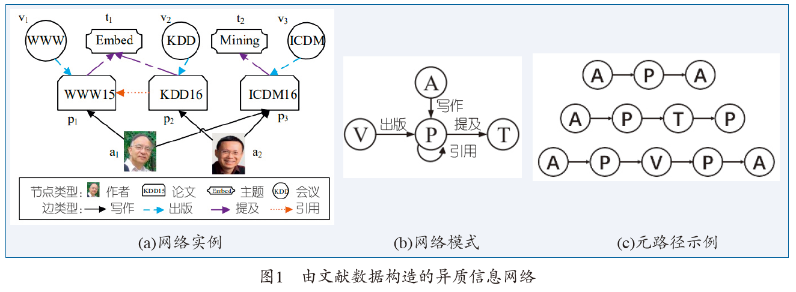
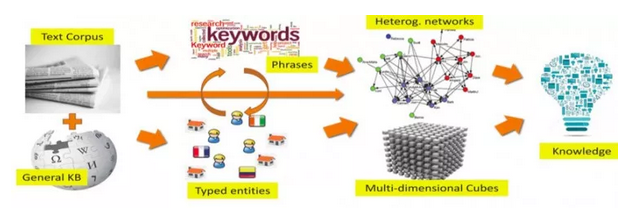
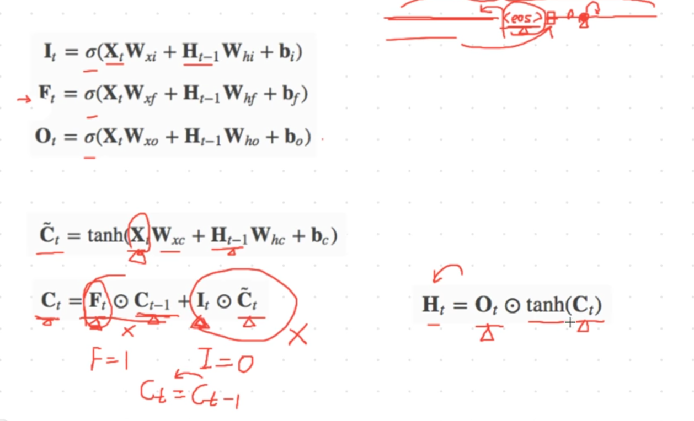
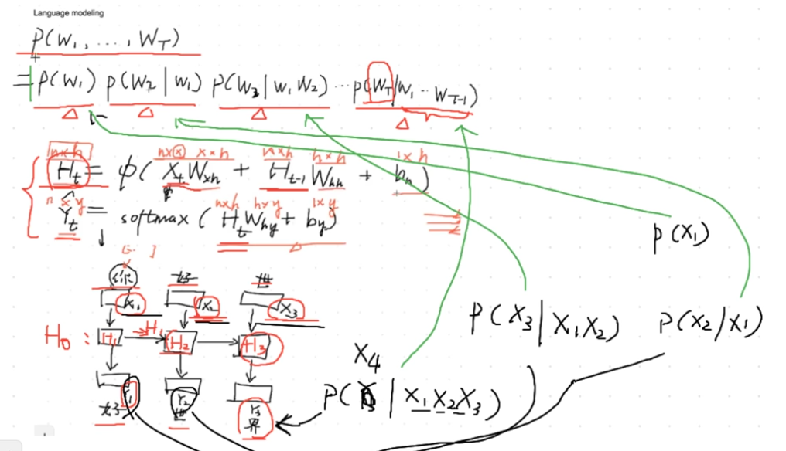

动态异质嵌入表示
方案1
- 将t时间之前的嵌入存入文件中，每次只处理当前时间和从文件中读取前t个嵌入
- 异质图和时间结合起来
方案2
- 一次将所有时间的边读入
方案3
加正则化，batch_nomalize,layler_nomalize
方案四
- 修改取负样本的邻居度数
- 验证集 每张图分别验证
- 训练节点： 对应验证集
方案五
- 加边嵌入，节点嵌入加边嵌入
方案6
- 不同边生成不同嵌入
加正则化，batch_nomalize,layler_nomalize
title: 深度学习调参
catogories:
regularization_loss变化都很小，说明learning_rat太小啦 当没有使用regularization，的时候，网络训练只是通过classification_loss，改变权值，这是后梯度下降的通道
只有一个，当到达一定效果时，就jj了，不能用了。增加regularization，使得改变了整个模型的梯度，跳出了局部极值的怪圈，
使得整个函数目标函数分布改变了。赞赞赞！！！从这个经验来说真好用。
不过，也不是随便用，要看classification_loss 多少？ regularization_loss？，连个量的比值多少，这里我发现比值在
3:1，到5:1左右效果不错
深度学习中，使用regularization正则化(weight_decay)的好处，loss=nan
|
|
作者：慕森卡链接：https://www.imooc.com/article/details/id/27808来源：慕课网
使用字符串张量的Tensorflow字典查找https://stackoom.com/question/2OBMw/%E4%BD%BF%E7%94%A8%E5%AD%97%E7%AC%A6%E4%B8%B2%E5%BC%A0%E9%87%8F%E7%9A%84Tensorflow%E5%AD%97%E5%85%B8%E6%9F%A5%E6%89%BE
共享参数，共享变量
Gradient Check**，如果你觉得网络feedforward没什么问题，那么GC可以保证BP的过程没什么bug**。值得提的是，如果feedforward有问题，但是得到的误差是差不多的，GC也会感觉是对的。大多情况GC可帮你找到很多问题！步骤如下：
tiitle: 异质论文详解
内积只能建模一阶关系，使用 metric learning（具体可参见论文 Collaborative Metric Learning\ ，它具有 triangle inequality 特性）来同时捕捉一阶关系和二阶关系（second-order proximity ）
具体来说，A 和B相似，B和C相似，那么A和C也相似
relationship 的种类分布非常不均匀。 提出 loss-aware 自适应采样方法来进行模型优化
采用双向负采样（Bidirectional Negative Sampling Strategy）
每个 epoch，我们会把每个种类的网络的 loss 记录下来，如下，然后根据目标种类 r 的 loss 所占的比例，来确定对该种类 r 的 edge 采样出多少的比例。这样为根据 loss 来自适应的调整采样策略 （Loss-aware Adaptive Positive Sampling Strategy）
使用 metric learning 来解决 HIN 中的二阶关系，并借用 TransR 中的映射矩阵来解决 metric learning 存在的 ill-posed algebraic 问题，对于多种 relation 建立多个 relation space。
提出 loss-aware adaptive 采样方法，解决了 HIN 中存在的 relation skewed 的问题。
但是可能存在的问题是，该篇文章仅仅考虑基础的 relation，另外在 HIN 中还有常见的 composite relations 是使用 meta-paths 来表示的。
比如在 DBLP 这样的参考文献数据集上，存在 (A, author，P，paper，C，conference) 这些节点。而像 APA (co-author relation)，以及 APC (authors write pa- pers published in conferences) 这样包含着丰富的信息的 composite relations，在这篇文章中没有考虑到
异构网络中存在着很多的 relations，不同的 relations 有着不同的结构特性，如 AP 表现的是 peer-to-peer，而 PC 代表的是 one-centered-by-another 关系。如何区分不同的 relations
根据结构特性定义了两种 relations，Affiliation Relations (ARs) 代表 one-centered-by-another 的结构，而 Interaction Relations (IRs) 代表 peer-to-peer的关系。
对于 AR，这些点应当有共同的特性，所以直接用节点的欧几里得距离作为 proximity。对于 IR，将这种关系定义为节点之间的转移（translation）**。前者借鉴了 collaborative metric learning，后者借鉴了模型 TransE。
该指标由 u 和 v 种类的节点的平均度（degrees）来决定。如果 D(r) 越大，代表由 r 连接的两类节点的不平衡性越大，越倾向于 AR 类型，否则倾向 IR 类型。同时定义了另外一个稀疏度指标如下

该指标由 u 和 v 种类的节点的平均度（degrees）来决定。如果 D(r) 越大，代表由 r 连接的两类节点的不平衡性越大，越倾向于 AR 类型，否则倾向 IR 类型。
把节点和节点间的关系作为一种二分类问题考虑，给定两个节点 x,y，通过预测节点之间是否存在确定的关系 r，同时学习到了节点和关系的向量表示。
论文考虑到了节点和关系的语义是不同的，因此它们的表示空间也应该不通，所以论文对关系向量运用了一个正则函数。
该论文提出的模型，想要解决Type不兼容的问题。在研究异质网络中，常用的思路仍然是将所有的节点在同一个空间下表示，但是这时候就会出现一些节点因为存在多种关系，而关系与关系之间又并不兼容的特性。
如图，stan，musical，Ang Lee是不同类型的节点，因为musical和Ang Lee的embedding距离很远，会导致stan无法同时和两个embedding同时很近，因此需要学习两个不同的度量空间，从而stan分别在两个度量空间中与对应的node距离很近。
该度量向量μ是对不同类型的关系来进行embedding，g_{uv}是表示u,v之间的边的embedding。通过定义该相似度函数，能够获得基于不同边类型r的相似度。
分析具体场景所要考虑的关系→融合所有关系构建HIN→基于元路径或元结构计算相似度→先特征融合再进行分类器学习或者先学习分类器再进行集成。
Data collector and preprocessor 第一阶段为数据收集和处理阶段，系统收集用户的profile和发表的tweet，并使用CoreNLP对文本进行相关的处理，如果文本涉及到一些毒品相关词如海洛因、吗啡或其衍生词等都会以topic的形式标记下来。
Feature extractor and HIN constructor 每个tweet都会以词袋模型的形式进行表示，另外用户、tweet、topic的相关关系都会被考虑进HIN的构建中。
Meta-graph based similarity builder 在这一阶段，通过基于meta-graph的相似度计算方法，来计算用户之间的相似度。

基于meta-graph的相似度计算，我们就能够量化在给定语意关系下的用户间的相关性。在另一方面，作者也通过推文的词袋表示来计算任意两个用户产生的内容之间的余弦相似度 。 到了指定语意路径下的用户相似度矩阵，将这个矩阵还原成图，就得到了一个节点类型全为 user，边权重为两用户相似度的同态图
在得到的相似度矩阵上进行分类
Unzipper and Decompiler：对APK文件进行解包以及反编译成smali code；
Feature Extractor：解析每个APK文件的smali code，提取APK、API间的各种关系；
HIN Constructor：结合上一步的各种关系，构建 HIN；
Multi-kernel Learner：通过各种 meta-path 计算apk之间的相似度矩阵，然后基于此训练multi-kernel SVM；
Malware Detector：给定一个新的APK，通过前面其API的相关特征送入SVM进行分类；
蚂蚁金服在CIKM2018 上的文章
恶意账户具有强烈获取利益倾向和团伙性质，往往是通过批量、低成本注册的账户。
基于我们前面对设备聚集性和时间聚集性的分析，我们将上面的用于刻画联通子图的图神经网络方法进行扩展：
第一、我们构建异构图，包括账户类节点，以及多种类型的设备信息，如：电话、MAC、IMSI 以及其他 ID。
第二、我们为每个账户加入时间上的行为特征 X ∈ RN,P。其中每行 Xi 表示节点（账户或设备）在时间上的行为特征。我们希望构建的神经网络模型可以学习到通过设备聚集在一起的账户在行为特征上的模式，从而更准确的做出判别。
有了HIN，能给我们更多的用户-商品关联矩阵，这是因为每一条meta-path或meta-graph，都可以刻画出在该种语意关系下的用户-商品相似度矩阵。那么问题就转化为：已知用户-商品之间在多种关系下的相似度矩阵，如何融合这些矩阵所提供的信息呢？如果我们有了融合的方法，就可以在目前推荐的一般框架下进行建模。
向量相加，FM分解
对用户、商品、元路径分别做了embedding。如果仅有用户与商品的embedding建模，那就是一个很基础的基于隐变量的矩阵分解模型，在HIN中，有了meta-path之后，我们要去思考两件事？
1、meta-path 如何量化表达？
2、meta-path、user、item 三者的特征表达如何进行整合？
借用CNN+Pooling的组合，得到统一标准的meta-path embedding
K个路径实例是怎么选取的呢？一种方法是基于元路径的随机游走策略，即沿着元路径在节点之间均匀游走，作者认为这样并不高效。我们可以借用矩阵分解的思路得到每一个节点的表达，然后在游走的时候计算当前节点与其所有邻居节点的相似度，按照相似度的大小进行概率跳转，这样抽样出来的路径实例更具有代表性
利用attention机制进行整合
细粒度的事件分类：不同实体描述
不同领域的人突然合作了一篇文章
Snapshot
表示方法在时序上对动态网络等间隔取快照(Snapshot)，从而得到网络演化的离散序列
continuous time networks
将每个连边都打上多个时间戳，表示连边在该时刻发生变化。
前沿论文综述：如何把一系列随时而变的网络放到一个特征空间下比较
图智能分析利器-Graph Embedding与动态图异常检测
包含不同类型节点和边的异质信息网络可以更加完整自然地对现实世界的网络数据建模
元路径表示连接两个对象之间的关系的组合，它刻画了网络中包含的丰富的语义信息
异质信息网络被定义为一个有向图，它包含多种类型的对象或者关系，每个对象属于一个特定的对象类型，每条关系属于一个特定的关系类型。网络模式（Network schema）是定义在对象类型和关系类型上的一个有向图，是信息网络的元描述。
元路径
定义在网络模式上的链接两类对象的一条路径，形式化定义为表示对象类型之间的一种复合关系 R=R1R2……Rl，其中 代表关系之间的复合算子，Ai 表示对象类型，Ri 表示关系类型。
链接两类对象的不同元路径表示了不同的语义关系和不同的链接网络，这也造成了不同的分析结果和不同的特征表示。


节点和边的异质性带来的挑战。不同类型的节点和边代表不同的对象，因此，在异质网络的表征学习中需要考虑将不同类型的对象映射到不同的空间中。另外，如何有效地保存每个节点的异质邻居以及有效地处理异质的节点序列也是值得考虑的问题。
异质网络中丰富的信息带来的表示融合挑战。异质网络中的各类信息蕴含着丰富的语义，它从多个维度来刻画节点的意义，因此，如何有效地抽取和利用异质网络的多维度信息，并有效地融合这些信息以便全面地学习节点的表示是一个巨大的挑战。
根据不同的元路径可以从多个维度对节点的丰富信息建模。如何有效地自动筛选和融合不同元路径下的网络节点表示是一个值得关注的研究方向。目前节点的表征学习研究比较多，关系和元路径的表征学习还比较少。不同类型的节点有不同的特征表示空间，对这些表示空间之间的关系还缺乏深入探究
异质网络天然包含丰富的多模信息，如属性、文本和图像等。只有将更多模态的信息考虑进来，学习到的网络节点表示才能更加准确地对节点进行描述。而现有的主要工作都致力于对异质信息网络中的结构信息建模，没有充分挖掘网络中的其他模态信息。如何更好地融合这些多模态信息的表征学习将是一个研究难点
现实世界中的网络往往规模较大并且动态变化。我们需要考虑节点和边的异质性，快速高效地获取新增节点的表示，研究面向增量计算和在线计算的表征学习方法。
在社区发现、异常检测等特定任务上，通用表征学习的效果往往不尽如人意。如何与具体应用结合学习网络表示是重要发展方向
更加复杂的网络构建
当前研究大多假定异质信息网络是明确定义的，网络中的对象和关系是清晰的。然而，在实际应用中，从真实数据构造异质信息网络会遇到很多挑战。对于关系数据库之类的结构化数据，构造异质信息网络比较容易，然而即使是在这种网络中，对象和关系也可能具有噪声，比如会出现对象重名或关系不完整等问题；对于像文本、图像等非结构化数据，如何准确抽取出相应的对象和关系，进而建立更加完善和准确的异质信息网络也将面临更多挑战，在实践中会用到诸如信息抽取、自然语言处理、图像处理等各种技术。
在异质信息网络中，对象可通过不同的方式组织在一起。星型模式是广泛使用的异质信息网络类型，例如前面介绍的科技文献网络。之后，又出现了带环的星型模式和多中心网络等网络模式。
异质信息网络中的对象和关系包含着丰富的语义信息，而元路径可以捕捉这种语义信息。异质信息网络上的很多数据挖掘任务是基于元路径进行研究的，但是元路径在某些应用场景中并不能捕捉到精细的语义信息。例如，“作者-论文-作者”路径表示了作者之间的合作关系，但却不能描述特定条件下（例如KDD领域）的合作关系。为了克服这个不足，很多研究者提出了受限元路径、带权元路径、元结构等概念扩展元路径的语义抽取能力。针对更加复杂的网络结构（如知识图谱），如何设计更加灵活精细的语义探索工具仍然需要进一步的研究。
\ **
Metapath2vec： 做基于元路径的随机游走来抽取节点结构信息，进一步深化节点类型带来的差异提出了Metapath2Vec++
HIN2Vec： 考虑了不同类型节点及节点间复杂多样的关系
HINE ：元路径随机游走来计算节点间的相似性
可以将异质网络分解为比较简单的网络，分别对这些网络进行表征学习，然后再将这些信息融合起来
HEREC ：利用元路径抽取异质网络中的多个同质网络，并对这些同质网络进行表征学习，然后通过融合函数对不同的表示进行融合，并结合矩阵分解模型进行评分预
PTE ：从文本中构建的异质网络分解成3 个子网：word-word 网络、word-document 网络和word-label网络。对上述网络进行表征学习可以得到不同类型对象（如word、document 和label）的向量表示
EOE 复杂的学术异质网分解为单词共现网络和作者合作网络，对各个子网内节点对和子网间节点
对同时进行表征学习
BL-MNE 采用自动编码机分别对异质网络在不同元路径下的信息进行编码，联合编码，不同网络之间通过转移矩阵进行融合
SHINE 利用自动编码机分别对社交网络、情感网络和画像网络中的异质信息进行压缩编码得到特
征表示，然后通过聚合函数对这些表示进行融合得到最终的节点表示。
HNE 针对文本和图像并存的异质网络，通过CNN 和MLP 分别对文本和图像数据进行特征抽取，然后通过转移矩阵将不同类型的数据投影到同一个空间。上述方法均采用深度模型来学习节点的向量表示。
提取元路径，挖掘隐含的丰富语义关系
满足如下性质：

相似度的定义方法都会满足这两点基本性质
基于元路径最基本的两个工作是：
（1）衡量HIN中基于对称元路径的相同类型节点间的相似度方法PathSim【1】（代码python2.7：http://download.csdn.net/download/u013527419/9475257）。
PathSim 利用对称元路径抽取两个节点之间的连通路径来度量二者的相似性，这样不仅利用到了相关的异质信息，而且体现了节点和边的丰富语义

这个式子说明，给定某一个对称元路径P，PathSim和两部分有关：
（2）衡量HIN中基于任意元路径的相同/不同类型节点间的相似度方法HeteSim【2】（代码：https://download.csdn.net/download/u013527419/10353251）
HeteSim以pairwise random walk的方式来考虑这个问题。假设在路径P的两端有两个漫步者向路径中点相向运动，那么就将两端对象的相似度定义为二者在中点某个节点相遇的概率。 HeteSim就是以中点类型M为界，左右两边的可达概率矩阵的乘积
（3）其他基于meta path 的相似度度量方式：
common node，PCRW，BPCRW
KnowSim（based on given meta path and the reverse meta path）
AvgSim（similarity of documents in HIN）
RelSim（measure the similarity of relations in HIN）
《Graph Learning》| HIN-基于元路径的相似度
鉴于meta path的表征能力有限。例如，在DBLP中, 如果我们想要度量发表的论文既在同一个会议上又含有相同的主题词(i.e.,the APVPA and APTPA paths)的两个作者的关系时，meta path 就不太好使，像是a1 和a2 基于meta path的三种相似度都是相同的。【1】提出了meta structure,表示一些更复杂的关系，meta path 是 meta structure 的特例。

元结构是定义在一个HIN上的有向无环图 directed acyclic graph DAG，它有一个源节点与一个目标节点
[1]Huang, Z., Zheng, Y., Cheng, R., Sun, Y., Mamoulis, N., Li, X.: Meta structure: computing
relevance in large heterogeneous information networks. In: SIGKDD, pp. 1595–1604 (2016)
[2]Meta-Graph Based Recommendation Fusion over Heterogeneous Information Networks.
参考博客：https://blog.csdn.net/u013527419/article/details/73610233
基于网络功能模块的图特征学习: 利用图特征学习来解决语义相关度检索任务
异质信息网络中的排序面临着一些挑战。首先，异质信息网络中有不同类型的对象和关系，如果同等地处理所有对象会将不同类型的对象混合在一起；其次，异质信息网中不同类型的对象和关系带有不同的语义含义，这可能导致不同的排名结果。
Metapath-guided Heterogeneous Graph Neural Network for Intent Recommendation
HinDroid: An Intelligent Android Malware Detection System Based on Structured Heterogeneous Information Network
主要解决的问题是如何识别恶意手机软件
HitFraud: A Broad Learning Approach for Collective Fraud Detection in Heterogeneous Information Networks
Heterogeneous Graph Neural Networks for Malicious Account Detection ： CIKM 2018
Linmei Hu, Tianchi Yang, Chuan Shi, Houye Ji, Xiaoli Li.Heterogeneous Graph Attention Networks for Semi-supervised Short Text Classification. EMNLP 2019
Deep Collaborative Filtering with Multi-Aspect Information in Heterogeneous Networks. TKDE 2019
## 韩家炜 from Unstructured Text to TextCube: Automated Construction andMultidimensional Exploration
将数据结构化。
两种结构化数据的形式，一种是异质网络（Heterogeneous Network），另一种是多维文本立方体（Multi-dimensionalText Cube）。
从结构文本中挖掘知识
Structuring：将无结构的文本转化成有结构的、有类型的、关联的实体或关系
Networking：利用大量有结构的关系构建网络
Mining：在关系和网络上进行挖掘
如果有一个 Network 将 Big Data 结构化后，其预测能力（或者别的能力）将是非常强的。

通过 NY Times 在 2016 年的新闻很容易就挖掘出了当时美国两党辩论过程中的主要议程（例如

从 Text 中挖掘出词组（Phrase），那么对挖掘文本结构将有很重要的意义。韩家炜团队的人员先后提出了三种方法，分别为无监督的 TopMine、弱监督的 SegPhrase和远程监督的AutoPhrase
首先是在同一个实体上有不同类型信息的学习。这种类型的广度学习包括前面谈到的 Multi-view Learning、Multi-source Learning、Multi-model Learning 等。
其次是在不同的但类型相似的实体上信息的学习。这包括 Transfer Learning。
另外是在有复杂网络类型关系的不同类型实体信息的学习。这包括基于融合的异质信息网络（HIN）
要做好「广度学习」，需要以下三步：
首先，定义并获取相关的有用数据源，也即找到对你的问题有用的数据；
其次，设计一种模型来将异质数据源信息融合起来；
最后，基于模型整体的需求从各种数据源中深度地去挖掘信息。
度量学习
表征学习
案例：重名实体排歧
基于地理位置的专家发现
https://mp.weixin.qq.com/s/6cALUL7hQgSSH3HD1znRwg
2018，异质网络表征学习的研究进展
《异构信息网络挖掘： 原理和方法》，作者( 美）孙艺洲（Yizhou Sun），（美）韩家炜（Jiawei Han）
title: 论文集合
-————-
\Table of Contents**
\1. Recomendation
\2. Graph
\3. Bayesian Deep Learning
\4. Datasets
### 异构网络
| 类型 | 日期 | 文章题目 | 作者 | 会议 | 引用 | 代码 | 备注 | 参考网址 |
|---|---|---|---|---|---|---|---|---|
| is a singer embedding Enough ?learning node representation that capture multiple social contexts | WWW19 | https://github.com/google-research/google-research/tree/master/graph_embedding/persona | Google AI Splitter是一种无监督的嵌入方法，允许图中的节点可以嵌入多个向量，以便更好地表示节点在一些重叠社区的参与。继承并拓展了persona graph方法 | https://mp.weixin.qq.com/s/U8S5Ew2JolAtMMI_Gn85nQ | ||||
| Fine-grained Event Categorization with Heterogeneous Graph Convolutional Networks | Hao Peng, Jianxin Li, Qiran Gong, Yangqiu Song, Yuanxing Ning, Kunfeng Lai, Philip S. Yu | IJCAI 2019 | https://github.com/RingBDStack/PPGCN | |||||
| A survey of heterogeneous information network analysis | Shi, C., Li, Y., Zhang, J., Sun, Y., & Philip, S. Y. (2016). | 251 | IEEE Transactions on Knowledge and Data Engineering | 综述 | ||||
| 11.19 | Easing Embedding Learning by Comprehensive Transcription of Heterogeneous Information Networks | KDD 18 | 这篇KDD’18的文章，没有按照常规的方法将所有的node嵌入到同一的空间，因为文章提出node因为连接的edge类型（type）不同，存在不兼容（incompatibility）的特性，所以最好能够根据不同的edge type来定义不同度量空间（metric space），保持同一个度量空间下，node的兼容性. 局限性：比如没有考虑更复杂的网络结构信息，而是仅仅通过相邻节点的关系来确定embedding，更复杂的关系可以通过meta-path来找到，这也可能成为该论文未来的研究方向 不同类型关系的嵌入与节点边的嵌入计算相似度，定义相似度函数，获得基于不同边类型的相似度函数 |
https://mp.weixin.qq.com/s?__biz=MzU1Mjc5NTg5OQ==&mid=2247483890&idx=1&sn=1eacd1791a7f560e7b279fc13998e4ab&chksm=fbfdea66cc8a6370e301df5024414761a0ae46fe893f8f4da68e660d14feeb44cd92c2f7a8f8&scene=21&token=1524641645&lang=zh_CN#wechat_redirect | ||||
| HIN2Vec: Explore Meta-paths in Heterogeneous Information Networks for Representation Learning | CIKM17 | 94 | \HIN2Vec 的核心是一个神经网络模型，不仅能够学习网络中节点的表示，同时还学到了关系（元路径）的表示**。HIN2Vec 模型\保留了更多的上下文信息**，不仅假设\存在关系的两个节点是相关的**，而且还\区分节点之间的不同关系**，并通过共同\学习关系向量**区别对待 把节点和节点间的关系作为一种二分类问题考虑，给定两个节点 x,y，通过预测节点之间是否存在确定的关系 r，同时学习到了节点和关系的向量表示 HIN2Vec 模型同时学习了节点和关系（元路径）的表示向量，这种多任务学习（multi-task learning）方法能够把不同关系的丰富信息和整体网络结构联合嵌入到节点向量中。 |
https://blog.csdn.net/c9Yv2cf9I06K2A9E/article/details/78623785 http://ir.dlut.edu.cn/news/detail/476> |
||||
| metapath2vec: Scalable representation learning for heterogeneous networks | SIGKDD 2017 | 371 | ||||||
| 异构图神经网络分层注意力机制 | 节点级别和语义级别 | >https://mp.weixin.qq.com/s/nSogEB5R_M9VKY1AiL8EBw | ||||||
| \应用** | Heterogeneous Graph Neural Networks for Malicious Account Detection | CIKM 2018 | 一种新的基于异构图的、面向恶意账户识别的图神经网络方法（GEM, Graph Embeddings for Malicious accounts） - 时间聚集性 设备聚集性 联通子图 |
https://mp.weixin.qq.com/s/oWNMP9ul0ZmQN7sarJ4C6w | ||||
| IntentGC:a Scalable Graph Convolution Framework Fusing Heterogeneous Information for Recommendation | 用户商品推荐系统问题定义为网络表征学习中的连接预测问题 | https://mp.weixin.qq.com/s/9MWoCmtKPPVs3Rmko-7adQ | ||||||
| PME:Projected Metric Embedding on Heterogeneous NEtworks for LInk Prediction | KDD 2018 | 相比于同构网络的 embedding，异构网络中节点之间的 proximity 不仅仅指两个节点在 embedding space 的距离，同时也会受到 relation 中所包含关系的影响。 | https://mp.weixin.qq.com/s/xyE9o8nx6TrabGGJwMzzIg | |||||
| Relation Structure _aware Heterogeneous Information Network Embedding | Yuanfu Lu, Chuan Shi, Linmei Hu, Zhiyuan Liu | AAAI 2019 | https://github.com/rootlu/RHINE | \1. 根据结构特性定义了两种 relations，Affiliation Relations (ARs) 代表 one-centered-by-another 的结构，而 Interaction Relations (IRs) 代表 peer-to-peer的关系。 | https://mp.weixin.qq.com/s/xyE9o8nx6TrabGGJwMzzIg | |||
| Estimating Node Importance in Knowledge Graphs Using Graph Neural Networks | 很多时候针对不同的问题，不同节点的重要性并不相同，如果设计一种模型能够预测知识图谱中节点针对某个问题的重要性（importance score），则能够辅助抽取有用的信息。 | https://mp.weixin.qq.com/s/1wJsd6lHnIg4b2d2-qVh3A | ||||||
| Meta-Graph Based Recommendation Fusion over Heterogeneous Information Networks | KDD 2017 | 77 | https://github.com/HKUST-KnowComp/FMG v | 推荐过程: 矩阵分解(MF) + 分解因子机(Factorization Machine) | https://bigquant.com/community/t/topic/123433 | |||
| \Leveraging Meta-path based Context for Top-N Recommendation with A Neural Co-Attention Model** | Binbin Hu, Chuan Shi, Wayne Xin Zhao and Philip S. Yu | SIGKDD 2018 | https://github.com/librahu/MCRec | 显式建模用户-商品-元路径的三元关系 | https://mp.weixin.qq.com/s/DsdMB_S2CqsRUhMfb2P7vA | |||
| Abnormal Event Detection via Heterogeneous Information Network Embedding | Shaohua Fan, Chuan Shi, Xiao Wang | CIKM 2018 | https://github.com/googlebaba/CIKM2018-AEHE | 检测出论文中领域不同的两个作者合写了一篇文章 | ||||
| SemRec: A Personalized Semantic Recommendation Method based on Weighted Heterogeneous Information Networks. | https://blog.csdn.net/qq_20599123/article/details/52090297 | |||||||
| Similarity modeling on heterogeneous networks via automatic path discovery | https://github.com/yangji9181/AutoPath |
### 动态网络
| 日期 | 文章题目 | 作者 | 会议 | 引用 | 代码 | 备注 | 参考网址 |
|---|---|---|---|---|---|---|---|
| GraphWaveNet for Deep Spatial-Temporal Graph Modeling | IJCAI 2019 | 提出了一个新颖的图神经网络框架——Graph WaveNet，用于时空图建模，同时捕获空间依赖性与时间趋势 | https://mp.weixin.qq.com/s/olt_i6JxfslFSdbz0Dx4oA | ||||
| Dynamic Hypergraph Neural Networks | 超图网络模型（hypergraph），构建了一种通过节点特征相似度来让图网络自我进化的算法。优势在于通过不断的迭代和挖掘可以构建初始状态不包含的关系属性，对于挖掘隐含的关系是一种比较有效的方法 | https://mp.weixin.qq.com/s/nGPUcDHTrG6KwAqDCkfA1w | |||||
| Continuous-time dynamic network embeddings | www18 | https://mp.weixin.qq.com/s/yThf_QDdk3Z328Ticuh19A https://blog.csdn.net/CSDNTianJi/article/details/100830263 |
|||||
| Temporal Network Embedding with Micro- and Macro-dynamics | Yuanfu Lu, Xiao Wang, Chuan Shi, Philip S. Yu, Yanfang Ye | https://github.com/rootlu/MMDNE | |||||
| Discovering Meta-Paths in Large Heterogeneous Information Networks | 发现meta path | ||||||
| Collective Classification of Spam Campaigners on Twitter: A Hierarchical Meta-Path Based Approach | |||||||
| Deep Interest Evolution Network for Click-Through Rate Prediction | https://github.com/mouna99/dien | 深度兴趣进化网络（DIEN）跟踪用户兴趣演化 | https://www.jiqizhixin.com/articles/111102 |
### 内容嵌入
| 日期 | 文章题目 | 作者 | 会议 | 引用 | 代码 | 备注 | 参考网址 |
|---|---|---|---|---|---|---|---|
| Attributed Multiplex Heterogeneous Network | https://mp.weixin.qq.com/s/SgvlPtan5-WvXoehClT70A |
| 日期 | 文章题目 | 作者 | 会议 | 引用 | 代码 | 备注 | 参考网址 |
|---|---|---|---|---|---|---|---|
| GEMSEC: Graph Embedding with Self Clustering | https://github.com/benedekrozemberczki/GEMSEC |
| 日期 | 文章题目 | 作者 | 会议 | 引用 | 代码 | 备注 | 参考网址 |
|---|---|---|---|---|---|---|---|
| SHINE: Signed Heterogeneous Information Network Embedding for Sentiment Link Prediction | https://blog.csdn.net/Amyli_dream/article/details/80315054 |
Solution: Step1: Go to Google Chrome: Access same URL: Download Certificate (call it myCert.cer)
Open Google Chrome. Click on Three Dots on Right-Top Most Corner, Select More Tools/Developer Tools –> Go to Security Tab –> Select View Certificate –> Go to Details Tab –> Click on Copy to File.
Step2: Download importcert.m and execute >> importcert(‘myCert.cer’)
Step3: Restart MATLAB
Adding certificate:
Keytool -import -alias CERTNAME -file c:\certificate.crt(you are asked to define password)
and
Keytool -keystore ..\lib\security\cacerts -import -alias CERTNAME -file c:\certificate.crt(if password required, try 'changeit')
| 论文详解 | 记录 | 笔记 |
|---|---|---|
| 标题 | – | $1 |
| 作者 | $1 | |
| 学校 | $1 | |
| 发表地点 | – | – |
| 主要贡献 | – | – |
| 内容 | – | – |
| 难点 | – | – |
title：Nature
Nature杂志为例，目前它每期刊登的文章中，属于学术文本的仅3个栏目：论文（article）、归类于“原创研究”的通信（letter）以及综述评论（review）。通信比较简要，是对某项科研成果的初步介绍，论文篇幅稍长，是对某项研究工作更全面的介绍。但是一定要注意，Nature杂志还有另外的15个栏目呢！它们是：
消息和评论（News and Comment）、读者来信（Correspondence）、讣告（Obituaries）、观点（Opinion）、书籍和艺术（Books & Arts）、未来（Futures——那个发表科幻小说的栏目）、书评（Book Reviews）、消息和观点（News & Views）、洞见（Insights），评论和视野（Reviews and Perspectives）、分析（Analysis）、假想（Hypothesis）、招聘（Careers）、技术特征（Technology Features）、瞭望（Outlooks）
评论：https://www.nature.com/articles/d41586-019-02616-2
https://www.nature.com/articles/d41586-019-02562-z#ref-CR1
https://en.wikipedia.org/wiki/File:Fourier_series_square_wave_circles_animation.gif
https://en.wikipedia.org/wiki/File:Fourier_series_sawtooth_wave_circles_animation.gif
https://zhuanlan.zhihu.com/p/19759362?utm_source=wechat_session&utm_medium=social&from=singlemessage
aww baord
数据可视化平台：fooplot(grafana)
GRU：重置门：中短期依赖关系 把过去的信息set为0，
更新门：如何更新，上一时刻和当前时刻的候选状态，中长期依赖关系，Zt 为1，就可以一直拷贝以前状态
sigmoid:大部分接近0或者1
按位相乘：乘0 都为0，乘1保留原值 判断是否保留过去信息

输入门
遗忘门
输出门: 是否把状态传递到隐含状态(比GRU多的步骤)
候选记忆细胞 tanh(-1到1之间) 中心化数据
记忆细胞

移位（错位）准备X，Y
最后全概率最大

随机批量抽样
相邻批量采样
上一个批量的最后一个字符与下一个批量的最后一个字符相关，上一个H3 初始化 下一个批量的H0
残差F（x）比原始期望H（x）更容易优化，残差更容易优化为0
ResNet效果好是因为解决了退化问题，自动调节了网络结构
直接去掉当时是可以，但大多数时候，在训练前，我们不知道可以去掉，restnet就起到了类似于‘自动去除’的作用
 [
[